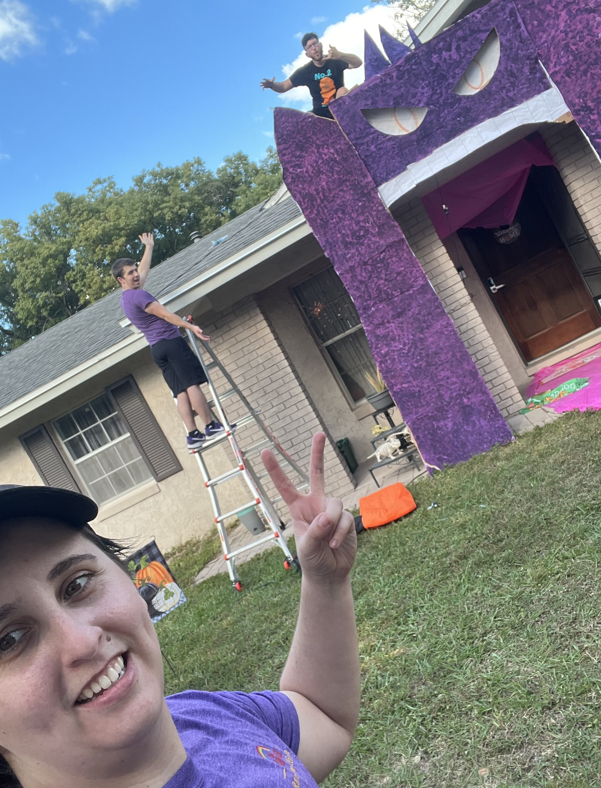
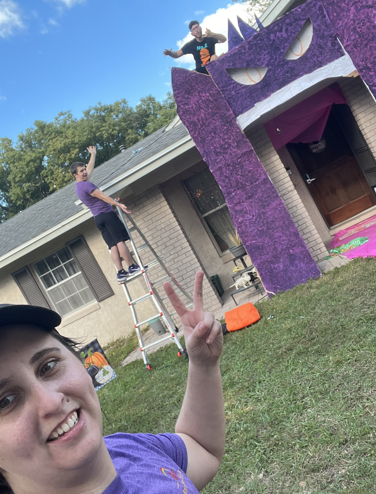

What's MOMENS Studios about?
Started back in 2013, MOMENS Studios was founded by Marley Omens as a way to get in touch with their creativity. With limited budget but lots of ambition, they began working on projects with whatever materials they could find. From 2D art to poetry and cosplay in between, they found themselves wanting to be creative but not sure which direction to take. Rather than be limited by sticking to one path or another, they allowed themselves to be inspired and open to new experiences.
 

Since MOMENS Studios' inception, Marley has created both small-scale and large-scale projects, and the larger the project, the bigger the team. While most of their projects they accomplish alone, they work closely with their peers each year on Halloween Decorations where they get to do their biggest endeavors. They also work each year to create cosplays to show at conventions and have been working on their writing for years to cultivate their craft.